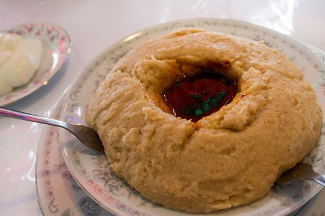

Also known as genfo, ga'at is a stiff porridge-like substance that is normally formed into a round shape with a hole in the middle for the dipping sauce, a mixture of butter and red peppers, or pulses such as sunflower, seed, nut and flax. Ga'at is made with barley or wheat flour.
This is the kind of breakfast that will make you want to get out of bed.
And not only is it delicious, it has the staying power to get you to lunch.
Ingredients
Directions
Toast teff over medium heat in a heavy saucepan. Stir constantly until it starts to pop.
Add water slowly, stir and bring to a gentle boil.
Reduce the heat, cover the saucepan, and let simmer for about 15-20 mins. Teff may also be cooked in a
mixture of water and vanilla almond milk (1.5 cups of each).
Serve with your choice of toppings.
Serves two.
Recipe courtesy of Maskal Teff.
Video courtesy of MsBissirat.